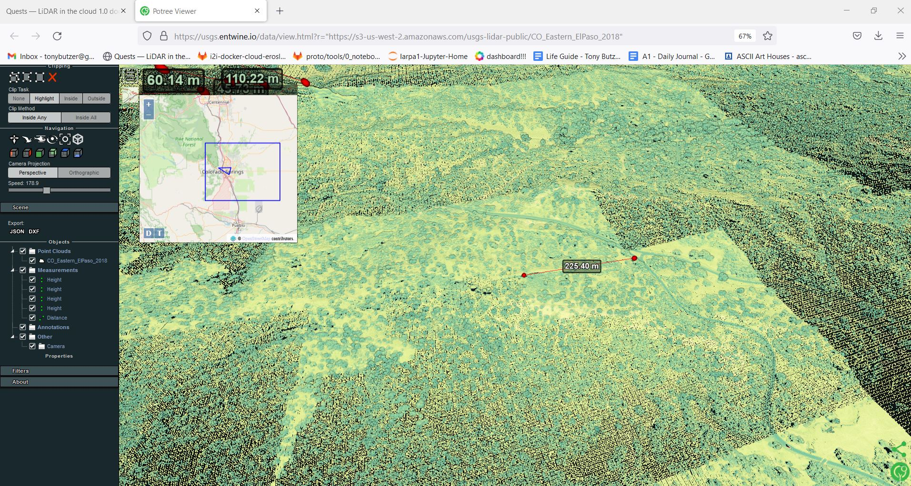

Quests¶
Mahesh Cloud Training¶
Lesson 1 bigPangeo Persistent Conda¶
use older pangeo to create ome directory environments - ~/my_condas
build maheshv2 env and use mamba from txt file
create pangeo_modules.txt from yml file
Lesson 2 Custom CHS Pesonal Pangeo Cloud Computer ec2 instance¶
bash shell
maheshv1 conda env
conda vs. pip - # use conda if you can
git repos
ajit
personal pangeo
https://github.com/tonybutzer/ajit
https://github.com/tonybutzer/personal-pangeo
Exercises for Mahesh¶
learn git and have a few repos
learn enuf linux - bash, vi, ls, basic linux commands
learn docker
improve python skills
run a prototype project in the cloud with s3
learn s3
learn ec2
get console access - find Jacob Charles
Lesson 2a - EC2¶
start instances
stop instances
cost instances
aws s3 ls
starting pangeo - jupyter notebook server - start stop maintain - nuances
In Pictures¶

Garden of the Gods v2¶
garden quest
community and collaborators¶
https://twitter.com/m_schuetz
lessor¶
https://agave.designsafe-ci.org/geo/v2/assets/80/8f4c3c75-a0b0-44f1-a858-e1949802cf6e/index.html
https://www.designsafe-ci.org/faq/
projections¶
https://epsg.io/6428
Tutorials¶
tutorials - hobu 0- sdsc - opentopo
next quests - to be sorted¶
leafmap
findings victories¶
s3fuse mount happiness
cheating with docker
potree docker converter
simple http server from conner manning
ssh tunnels
stac semi-happiness
geopandas happiness - intersects
day-in-the-life process¶
start with two usgs-lidar buckets
one public - big lidar potree trees - name of potree tree?
one requester pays - smaller laz files - need to be converted
start with usgs-lidar-public
use the corresponding stac to search my geojson AOI for actual lidar data
Find the corresponding data in the usgs-lidar (pays) bucket
install PDAL
aws s3 cp all of CO to eccoe-lidar bucket # for ease of use – 244 Gbytes
use s3fs-fuse to mount as a quasi-posix - “STANDARD” filesystem - for using PDAL cmdline
explored pylas and import pdal alternatives - more work needed here
Create STAC records for every CO small lidar area - still needs refining
not convinced the BBOX is a good representation of the actual coverage
measurements are also big - 30 meter rooflines on average houses
Import STAC records as a geoDataFrame with geometry
6800 stac files as json - more efficient than PDAL queries - much
Intersect the results with:
garden.geojson
twins.geojson
demos boulder¶
https://usgs.entwine.io/data/view.html?r=%22https://s3-us-west-2.amazonaws.com/usgs-lidar-public/CO_Eastern_ElPaso_2018%22
https://atlantic.tech/story-maps-data/g2-sample/G2_Sample.html
technology tools¶
pdal
stac
issues bugs¶
potree.entwine.io sadness
website is blank
https://potree.entwine.io/
potree viewer - lost scene capability to change from RGB - this bites.
https://potree.entwine.io/data/custom.html?r=%22http://localhost:8080/garden/ept.json%22
alternative is
https://ot-process2.sdsc.edu/potree/index.html?r=%22http://localhost:8080/red-rocks/ept.json%22
https://ot-process2.sdsc.edu/potree/index.html?r=%22https://ot-process2.sdsc.edu/sampleBoulder/pc1569530647002%22
https://ot-process2.sdsc.edu/potree/index.html?r=%22http://localhost:8080/twins2/ept.json%22
https://ot-process2.sdsc.edu/potree/index.html?r=%22http://localhost:8080/garden/ept.json%22
vpn sadness
network sadness
folium sadness
measurement sadness
resolution sadness - how to find and see the siamese twins
garden of gods so many trees no roads no labels/placenames overwhelm